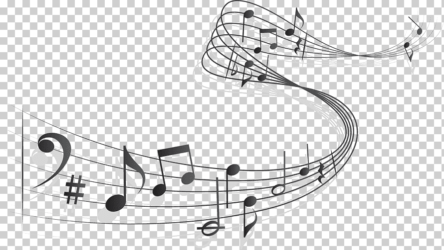
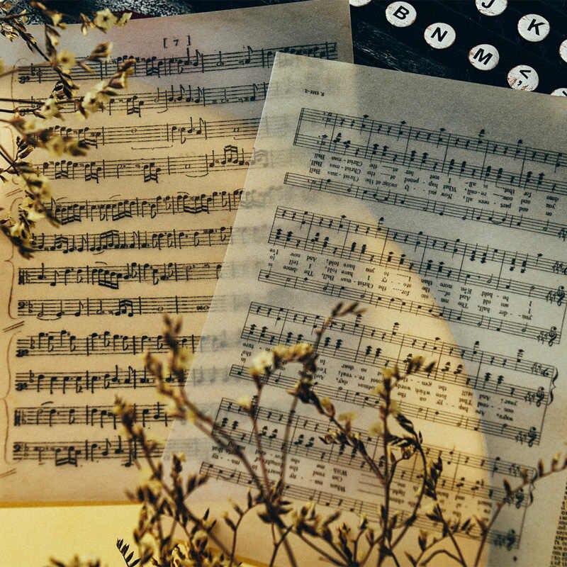

Nuestra página tiene como único objetivo el lograr instruir a cualquier persona que quiera aprender sobre instrumentos musicales de manera sencilla, como es que funcionan, que tipos, sus respectivas notas y correcta utilizacion de estos.

Misión
Tenemos como Mision entregar las herramientas necesarias para que que el usuario logre un buen aprendizaje sobre el instrumento de su interes, a traves de imagenes e informacion didactica muy sencilla de entender.

Visión
Queremos que la musica pueda ser interpretada por cualquier individuo que le interese aprender un instrumento, que cada persona pueda lograr hacer música en cualquier lugar o incluso lograr que el usuario cree sus propias letras acompañado de musica interpretada por el mismo.